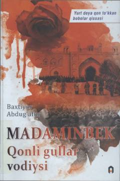

MQTurkiston tarixining fojiali va shiddatli davri haqida hikoya qiluvchi tarixiy roman.
Mazkur tarixiy romanda o'tgan asr boshlarida Turkiston boshidan kechirgan og'ir va alg'ov-dalg'ov voqealar, xalq ozodligi yo'lida kurashgan millat qahramonlaridan biri Madaminbekning hayoti va faoliyati hikoya qilinadi. Asar o'quvchini o'sha davrdagi murakkab siyosiy jarayonlar va fojiali taqdirlar bilan tanishtiradi.